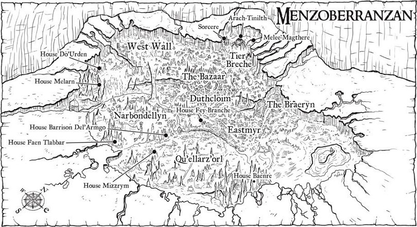

Night of the Hunter
Écrit par R. A. Salvatore, publié en Mars 2014.
AVERTISSEMENT
Cette page révèle certaines informations qui pourraient gâcher la lecture du roman. Si vous pensez lire ce livre dans un futur proche, mieux vaut ne pas parcourir ce résumé !
 1484. Les cinq compagnons du Hall (Drizzt Do'Urden, Bruenor, Catti-brie, Regis et Wulfgar) décident de retourner à la citadelle naine de Castelmithral [Mithral Hall], Bruenor craignant que la guerre contre les orcs n'éclate de nouveau très prochainement dans les Marches d'Argent. Mais avant cela, le nain veut repasser par l'ancienne cité de Gauntlgrym, dans les Escarpes [Crags] au nord de Neverwinter, afin de délivrer de sa malédiction son ancien compagnon Pwent, un nain devenu vampire et que Bruenor a croisé dernièrement affrontant des elfes noirs. Leur chemin les mène par le clan nain des Battlehammer sous Kelvin's Cairn, puis aux portes de Luskan, et enfin à Longueselle [Longsaddle], le siège des Harpells. Là, les magiciens leur fabriquent une bague magique capable d'enfermer une âme, afin qu'ils puissent y attraper celle de Pwent dans l'attente de rencontrer un grand prêtre qui saura ôter la malédiction du nain, et donnent également à Catti-brie une copie de cette magie sur un parchemin. Quelques jours plus tard, la compagnie est attaquée dans son campement par la liche Ebonsoul, toujours à la recherche de sa dague. Le combat penchant vite en faveur du mort-vivant, Catti-brie n'a d'autre choix que d'utiliser la bague et d'y enfermer la liche. Il ne leur reste alors plus que le parchemin lorsque, le jour suivant, ils pénètrent tous ensemble dans le complexe de Gauntlgrym. Mais dès les premiers couloirs, ils doivent affronter de nombreux gobelins, hobgobelins et gobelours, et lorsqu'enfin ils se retrouvent face à Pwent, le sort de Catti-brie échoue.
1484. Les cinq compagnons du Hall (Drizzt Do'Urden, Bruenor, Catti-brie, Regis et Wulfgar) décident de retourner à la citadelle naine de Castelmithral [Mithral Hall], Bruenor craignant que la guerre contre les orcs n'éclate de nouveau très prochainement dans les Marches d'Argent. Mais avant cela, le nain veut repasser par l'ancienne cité de Gauntlgrym, dans les Escarpes [Crags] au nord de Neverwinter, afin de délivrer de sa malédiction son ancien compagnon Pwent, un nain devenu vampire et que Bruenor a croisé dernièrement affrontant des elfes noirs. Leur chemin les mène par le clan nain des Battlehammer sous Kelvin's Cairn, puis aux portes de Luskan, et enfin à Longueselle [Longsaddle], le siège des Harpells. Là, les magiciens leur fabriquent une bague magique capable d'enfermer une âme, afin qu'ils puissent y attraper celle de Pwent dans l'attente de rencontrer un grand prêtre qui saura ôter la malédiction du nain, et donnent également à Catti-brie une copie de cette magie sur un parchemin. Quelques jours plus tard, la compagnie est attaquée dans son campement par la liche Ebonsoul, toujours à la recherche de sa dague. Le combat penchant vite en faveur du mort-vivant, Catti-brie n'a d'autre choix que d'utiliser la bague et d'y enfermer la liche. Il ne leur reste alors plus que le parchemin lorsque, le jour suivant, ils pénètrent tous ensemble dans le complexe de Gauntlgrym. Mais dès les premiers couloirs, ils doivent affronter de nombreux gobelins, hobgobelins et gobelours, et lorsqu'enfin ils se retrouvent face à Pwent, le sort de Catti-brie échoue.
À Menzoberranzan, la gigantesque cité souterraine des elfes noirs, l'agitation règne. La maison Xorlarrin, troisième par ordre de puissance, alliée de la maison Baenre, la première, a pris pied à Gauntlgrym et s’apprête à y fonder la cité de Q'Xorlarrin. La matrone Zeerith Xorlarrin est d'ailleurs sur le point de quitter Menzoberranzan pour rejoindre cette nouvelle colonie et sa forge primordiale magique. Le conseil des Huit, celui des plus grandes et puissantes maisons nobles de la cité, va donc devoir être recomposé. Sur ordre de Lolth, Gromph, le frère de la Mère matrone Quenthel Baenre, infuse alors à sa sœur la sagesse de leur mère Yvonnel Baenre, grâce à un illithid. Puis Quenthel s'en va à Luskan, ville contrôlée par son frère Jarlaxle et sa compagnie de mercenaires Bregan D'aerthe, afin de faire revenir celui-ci à Menzoberranzan. Sa première tache sera de nettoyer l'ancienne Maison Do'Urden de toute présence. Arrive le jour du conseil. Xorlarrin perd sa troisième position et toutes les maisons montent d'un cran. Mais au lieu de faire monter la neuvième Maison, le siège libéré est alors occupé temporairement par Sos'Umptu, soeur de Quenthel et grande prêtresse de Lolth, qui reconstitue ainsi la Maison Do'Urden. Tos'un, fils de Mez'Barris, en sera le patron. Quenthel expose ensuite son plan : une armée de dizaines de milliers d'orcs se tient prête à la guerre dans les Marches d'Argent. Les deux citadelles naines d'Adbar et Felbarr, les elfes de Boilune [Moonwood] et les cités de Sundabar et Luneargent [Silverymoon] sont les cibles. L'assaut sera dirigé par la Maison Do'Urden, en la personne de Tos'un, et par Tiago Baenre, le maître d'armes de la Maison Baenre, mais les elfes noirs ne seront qu'en appui afin de limiter les pertes. En fait l'idée secrète de la Mère matrone est simple : que Tos'un n'en revienne pas vivant mais que la victoire fasse monter la nouvelle Maison Do'Urden en rang.
De leur côté un autre groupe de cinq, composé de l'assassin Artemis Entreri, de l'elfe Dahlia, de son fils occultiste tieffelin Effron, de la naine Ambergris et du moine Afafrenfere, va en direction de Port Llast, après s'être défait de quelques yétis sur la route. Dahlia est celle qui a laissé Drizzt Do'Urden agonisant au sommet de Kelvin's Cairn, l'elfe noir n'ayant dû son salut qu'à l'intervention d'Artemis. À la nuit tombante, ils sont violemment attaqués dans leur auberge par un groupe de drows et de driders menés par Tiago Baenre. Dahlia, Artemis, Afafrenfere et la naine sont fait prisonniers et amenés à Gauntlgrym, dirigée durant cette phase de préparation par la prêtresse Berellip, fille de Zeerith Xorlarrin. Ce qui intéresse les elfes noirs est de savoir où se cache Drizzt, les agents de Bregan D'aerthe sachant qu'Artemis connait Drizzt de longue date, et Dahlia finira par leur avouer qu'il doit être chez les nains sous Kelvin's Cairn. Le guerrier Tiago, ennemi juré de Drizzt, accompagné du mage Ravel Xorlarrin et du gros des troupes de la nouvelle colonie - formés de gobelins, de drows et de driders - partent alors sur le champ et attaquent le clan Battlehammer de Stokely Silverstream, ce dernier allant d'ailleurs y perdre la vie durant la défense. Les elfes noirs l'emportent, mais aucune trace de Drizzt.
Autour de la forge de Gauntlgrym, Drizzt et ses compagnons finiront, après de nombreux affrontements mais profitant tout de même du fait que la défense de la nouvelle colonie drow est faible, par retrouver Entreri et Afafrenfere, et même par récupérer l'âme de Pwent. Le groupe se sépare alors. L'elfe noir et l'assassin partent à la recherche des deux femmes manquantes, mais ne retrouvent qu'Ambergris. De son côté, Catti-brie affronte un élémentaire de l'eau, ce qui lui permettra de se lier avec sa bague de protection contre le feu y d'en découvrir de nouveaux talents, puis une araignée de jade, et enfin Dahlia, qui est possédée par Lolth et cherche la mort de celle qu'elle considère comme la raison de sa séparation avec Drizzt. Tout le monde se retrouve à la fin de ce combat où Dahlia est laissée pour morte ensevelie sous un tunnel. Entreri remercie Drizzt de l'avoir sauvé, et part seul chercher vengeance en tuant Berellip. Tous les autres ressortent du complexe et le moine et la naine prennent la route du monastère de la Rose Jaune en Damarie alors que les compagnons du Hall repartent en direction de Longueselle. Un peu plus tard, leurs troupes enfin regroupées, les elfes noirs réinvestissent Q'Xorlarrin, et Quenthel Baenre présente alors la nouvelle matrone de la Maison Do'Urden : Dahlia. L'illithid de Gromph a en effet utilisé ses pouvoirs psioniques pour lui sauver la vie. Puis la Mère matrone fait qu'un mage des Xorlarrin se sacrifie afin d'incanter un immense sort de ténèbres sur les Marches d'Argent, prélude à la guerre annoncée.
♦
Maisons nobles de Menzoberranzan en 1484
- Maison Baenre. La matrone est Quenthel Baenre, Mère matrone et chef du conseil des Huit, personnage le plus influent de la cité. Son frère l'archimage Gromph est le maître de Sorcere, l'école des magiciens. Sa soeur Sos'Umptu est Première Prêtresse de la Maison Baenre. Sa fille Myrineyl est prêtresse de Lolth.
- Maison Barrison Del'Armgo. La matrone est Mez'Barris Armgo. Sa fille Taayrul est grande prêtresse de Lolth. Maison tournée vers les arcanes mais possédant également les plus grands guerriers. Grande rivale des Baenre.
- Maison Faen Tlabbar. La matrone est Vadalma Tlabbar. Maison fanatique de Lolth. Alliée de Baenre.
- Maison Mizzrym. La matrone est Miz'ri Mizzrym. Sabbal en est la grande prêtresse de Lolth. Alliée de Baenre.
- Maison Fey-Branche. La matrone est Byrtyn Fey. Sa fille Minolin Fey est grande prêtresse de Lolth et maîtresse à Arach-Tinilith. Maison sans véritable allié avant que Minolin ne devienne la mère de l'enfant de Gromph.
- Maison Melarn. La matrone est Zhindia Melarn, la plus jeune des matrones du conseil. Maison fanatique de Lolth. Ardulrae Melarn est la matrone des Écritures d'Arach-Tinilith. Rivale de Baenre depuis la nomination de Do'Urden en tant que huitième Maison.
- Maison Vandree.
- Maison Do'Urden. La matrone est Darthiir Do'Urden (alias de l'elfe Dahlia), placée ici par la Mère matrone. Cette maison est reconstituée à la faveur du départ de la maison Xorlarrin.
Académie Tier Breche de Menzoberranzan
- Arach-Tinilith. École des prêtresses drows. Sos'Umptu remplace Quenthel en tant que Maîtresse d'Arach-Tinilith en 1484 (voir Rise of the King).
- Melee-Magthere. École des combattants.
- Sorcere. École des magiciens. Le Maître en est Gromph jusqu'en 1486, lorsqu'il est remplacé par Tsabrak Xorlarrin (voir Maestro).
